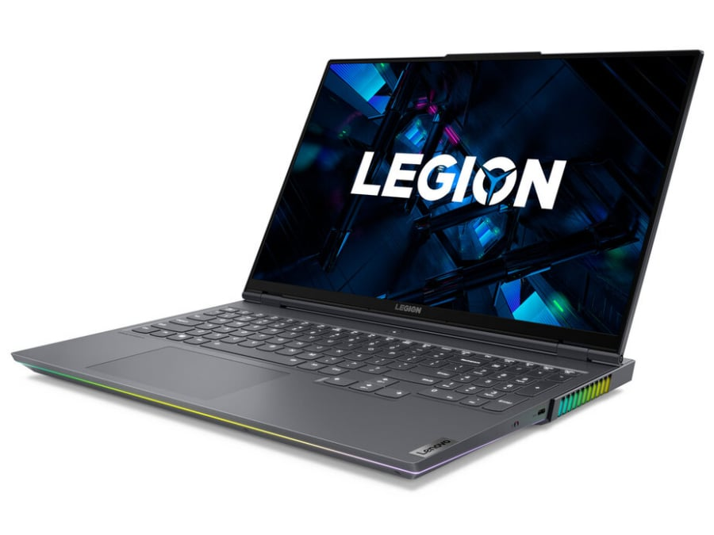
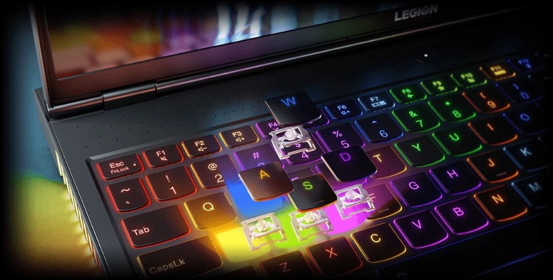

Min computer
Type
Lenovo Legion 7 er en ekstremt kraftfuld næste generations bærbar gaming-computer med en fantastisk 16” WQXGA-gaming-skærm, utrolig RTX 3080-grafik og en Ryzen 7 5800H-processor. Det robuste aluminiumschassis er fyldt med avanceret hardware og et robust Coldfront 3.0-kølesystem.
Specifikationer
Lenovo Legion 7 16ACHg6 er en gaming laptop og har følgende specifikationer:
- Processor:
- AMD Ryzen 7 5800H eller Ryzen 9 5900HX
- Grafikkort:
- NVIDIA GeForce RTX 3060, RTX 3070, or RTX 3080
- RAM:
- 2x 8GB SO-DIMM DDR4-3200MHz
- Skærmstørrelse:
- 16" IPS WQXGA (2560 x 1600)
Den bærbare gaming-computer, Legion 7, har en utrolig 16” WQXGA-skærm med et 16:10-billedformat. Skærmen understøtter G-SYNC og FreeSync, hvilket virkelig giver dig mulighed for at få mest muligt ud af de højtydende komponenter og lader dig nyde næste generations spilgrafik fuldt ud. Skærmen har en 100% sRGB-farveskala og en maksimal lysstyrke på hele 500 nits. IPS-panelet har en opdateringshastighed på 165 Hz.
